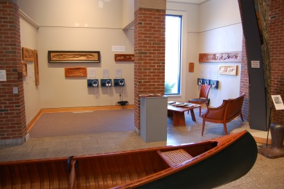

Art
Galleries
|
Gordon's Bronze editions can be seen at Harbor Square Gallery at 374 Main Street in Rockland, Maine, 04841. Call 207-594-8700 for hours. |
For a complete listing of Gordon's shows and exhibitions, please see his art resume.

photo by Chris Hall, courtesy of Maine Maritime Museum
"Visitors love the mixed media aspect of that exhibit and have commented that the music really helps bring the individual carvings to life and in turn the carvings help strengthen the story within the song."
~ Jason Moran, Director of Public Programs, Maine Maritime Museum